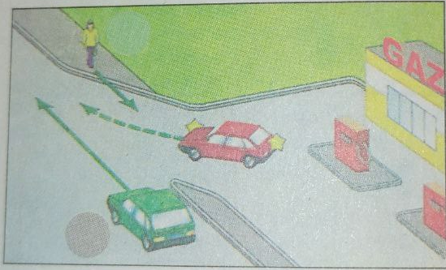
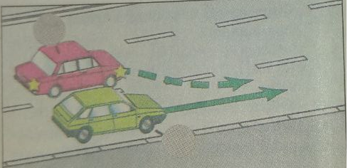

- Umumiy qoidalar
- Haydovchilarning umumiy vazifalari
- Yo'l transport hodisasi sodir bo'lganda haydovchining majburiyatlari
- Piyodalarning majburiyatlari
- Yo'lovchilarning majbiriyatlari
- Maxsus transport vositalaring imtiyozlari
- Svetofor va tartibga soluvchining ishoralari
- Ogohlantiruvchi va avariya (xavf-xatar) ishoralari
- Harakatlanishni boshlash, manyovr qilish
- Yo'lning qatnov qismida transport vositalarining joylashuvi
- Harakatlanish tezligi
- Quvib o'tish
- To'xtash va to'xtab turish
- Chorrahalarda harakatlanish
- Tartibga solingan chorrahalar
- Tartibga solinmagan chorrahalar
- Piyodalarning o'tish joylari va yo'nalishli transport vositalarining bekatlari
- Temiryo'l kesishmalari orqali harakatlanish
- Turar joy dahalarida harakatlanish
- Tik balandlik va nishabliklarda harakatlanish
- Yo'nalishli transport vositalarining imtiyozlari
- Tashqi yoritish asboblaridan foydalanish
- Mexanik transport vositalarini shatakka olish
- Transport vositalarini boshqarishni o'rgatish
- Odam tashish
- Yuk tashish
- Velosiped, moped va aravalar harakatlanishiga, shuningdek, hayvonlarni haydab o'tishga doir qo'shimcha talablar
- Mansabdor shaxslarning va fuqarolarning yo'l harakati xavfsizligini ta'minlash, transport vosiralarini yo'lga chiqarish, raqam va taniqlik belgilarini o'rnatish bo'yicha majburiyatlari
- Transport vositalarining raqam va taniqlik belgilari
53. Haydovchi harakatni boshlash, manyovr qilish (qayta tizilish, burilish, qayrilib olish, quvib o'tish va aylanib o'tish) va to'xtashdan oldin bajarilayotgan manyovr boshqa yo'l harakati qatnashchilarini harakatlanishiga xavf tug'dirmasligi kerakligi kerak.
54.  Haydovchi yondosh hududdan yo'lga chiqayotganda unda harakatlanayotgan piyodalar va transport vositalariga, shuningdek, yo'ldan chiqishda harakatlanish yo'lagini kesib o'tayotgan piyodalar va velosipedchilarga yo'l berishi kerak.
55.

 Haydovchi qayta tizilishda harakatlanish yo'nalishini o'zgartirmasdan harakatlanayotgan transport vositalariga yo'l berishi kerak.
Bir yo'nalishda harakatlanayotgan transport vositalari bir vaqtda qayta tizilayotganda, haydovchi o'ng tomondagi transport vositasiga yo'l berishi kerak.
Haydovchi qayta tizilishda harakatlanish yo'nalishini o'zgartirmasdan harakatlanayotgan transport vositalariga yo'l berishi kerak.
Bir yo'nalishda harakatlanayotgan transport vositalari bir vaqtda qayta tizilayotganda, haydovchi o'ng tomondagi transport vositasiga yo'l berishi kerak.
56. Aylanma harakat tashkil etilgan chorrahalarga kirish uchun burilishdan boshqa barcha hollarda, haydovchi o'nga, chapga burilishi yoki qayrilib olishidan oldinroq shu yo'nalishda harakatlanishi uchun mo'ljallangan qatnov qismining eng chetki holatini egallashi shart.